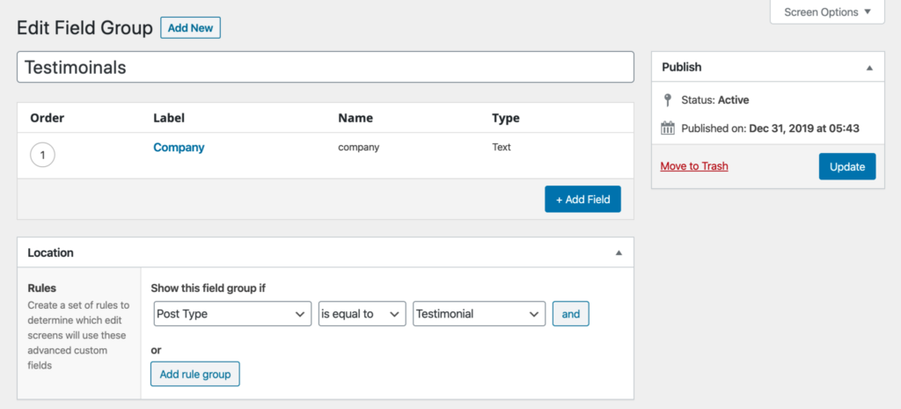
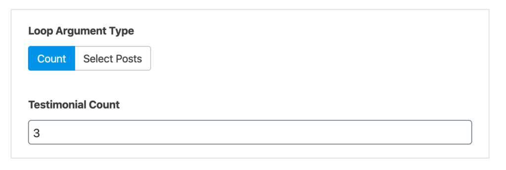
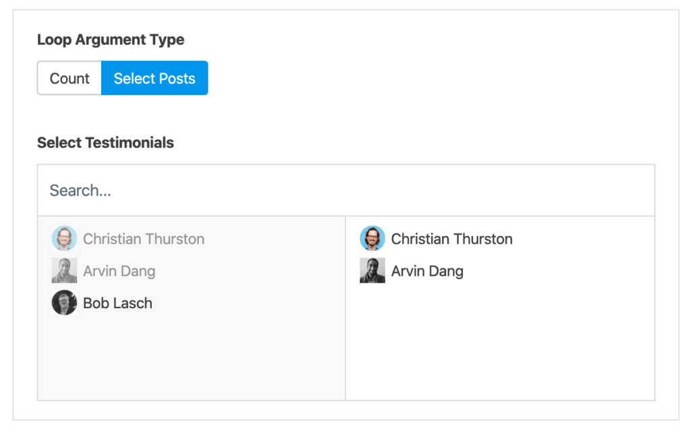
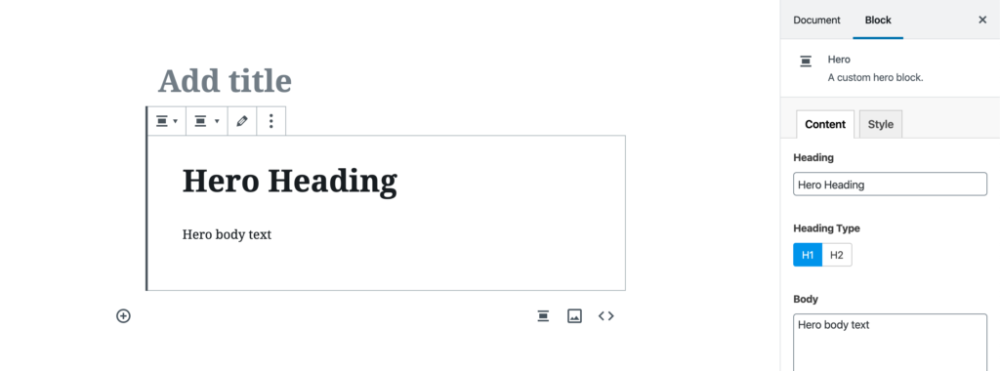
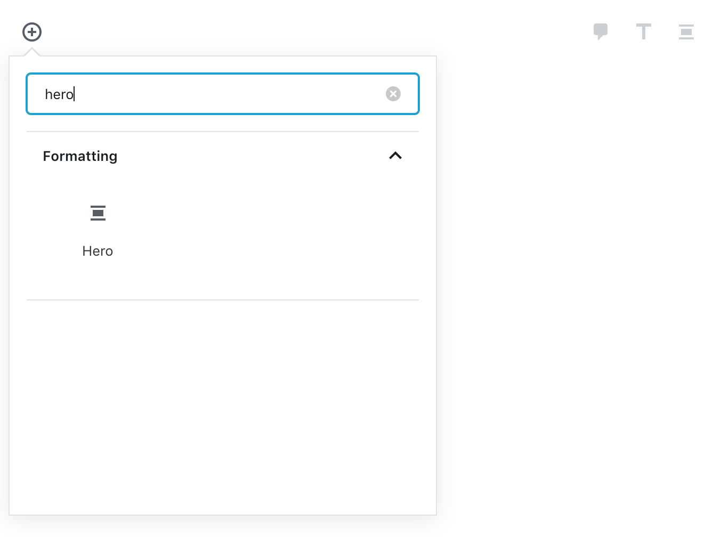
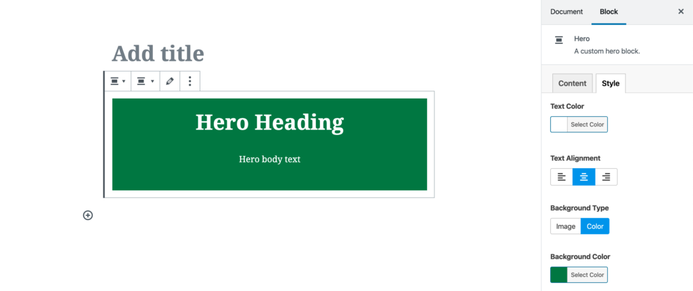
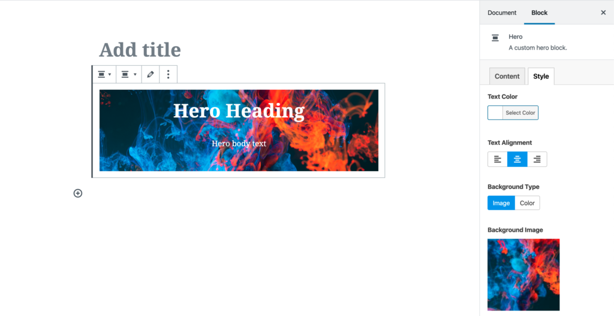

So I’m building a premium WP theme tailored for Affiliates and product review websites – and I’m hoping to release it later this year. I was just working on a product review demo page where I’ve uploaded an image of a MacBook Pro and I wanted to change the background color for the header of this product card.
And I noticed how the image’s white background doesn’t look too great over the gray background.
Instead of bringing this image into photoshop, removing the background, and rey-loading it to the WordPress – what if I could take care of this right here in the Gutenerg editor?
Well, we can… and with just a click of a button.
The screenshot above shows an ACF field that adds one line of CSS to the image. This is a pure CSS solution and it works in most modern browsers.
mix-blend-mode: multiply;
This feature works best when the background color is light shade… and fails completely if you go too dark.
Once you get your hands on this theme you can easily test it and see how it works in your own use case.
I’ve was struggling with page speed issues on my WordPress website after adding a chatbot. To fix that problem I created Chatbot Lazy Loader, a WordPress plugin that eliminates the page speed issues created by chatbots.
If your website is loading a chatbot widget, it’s likely negatively impacting your page speed. This plugin will prevent that for the following chatbot providers:
Messenger
Drift
Intercom
Indemandly
Crisp
If there are any questions or feedback, or if you have a chatbot provider you’d like this plugin to support comment below.
Here’s what we’ll accomplish in this brief guide – we’ll have a custom Gutenberg block that allows you to interface with the WP_Query class. You can loop through your posts or a custom post type and add query parameters like taxonomy, post count, and post order.
To demonstrate this, we’ll create a Testimonials block. The block will query a testimonial custom post type and display posts in a template.
In my previous post I covered how to create a custom Gutenberg block with Advanced Custom Field’s acf_register_block_type(). But the ACF documentation is a more complete resource.
Setting up the CPT
I recommend using the free CPT UI plugin for quickly setting up custom post types.
I don’t want to use Gutenberg to create the testimonial itself. The classic editor or custom fields will do just fine. In order to disable Gutenberg for the CPT you need to set the Show in REST API to false. Set it to true if you do want to use the Gutenberg editor.
Creating the Custom Fields
Within Advanced Custom Fields, I created just one field for the testimonial author’s company name. I’ll use the post title for the author’s name, the feature image for the author’s profile image, and the default classic editor for the testimonial content itself.

Register the Block
Within your functions.php file register your testimonial block. Be sure to scan through the ACF documentation to fully understand what’s happening here, but most of it should be self explanatory.
When you enqueue your CSS and JS within the acf_register_block_type() function, your assets are only loaded when your block is present on a page. And those assets get enqueued both on the front-end and the back-end. If you view your block from the editor with preview mode, you may notice areas where you’ll need to write extra CSS scoped specifically for preview mode in the editor. This is because the Gutenberg editor itself enqueues default styling that may affect your block in an unintended way.
The enqueue_style above reflects the ACF documentation in that the CSS is being enqueued from the same directory as the block template itself.
This isn’t how I do it in my themes though. I have all of my theme and block SCSS in a /src directory and that SCSS gets compiled to CSS and minified in a /dist directory. SCSS files for blocks live in /src/scss/blocks/block_name.scss. That means I’ll enqueue my block CSS like so:
I want some level of configuration over my testimonial block. Depending on where I use it, I’ll want to either loop testimonials with a posts_per_page to set a limit or I’ll want to hand select which testimonials to display.
Back in Advanced Custom Fields we’ll create three fields to create this functionality.
Note: I like prefixing my ACF field groups that contain block controls with “Block:“. This way I can more easily distinguish field groups that are used for the Testimonial CPT and field groups for the block that displays testimonials.
In this field group I’ve created a Button Group to allow the user to select between limiting the post loop with a post count or selecting from a list of published testimonials.
The Loop Argument Type field contains two options:
count : Count
select : Select Posts
Both the Testimonial Count and Select Testimonials fields have a conditional setting to only be displayed based on the selection of Loop Argument Type.
The Select Testimonials field should be set to return just the post ID.
Building the Block Template
Next I’ll create my template and add some PHP to handle any logic needed for the loop.
Then, I’ll start the loop and populate our testimonial fields in the same template. Now, the markup and CSS is up to you. I’m keeping it simple for this guide.
There’s one thing that I need to point out here to save you from some frustration. When looping through posts in a Gutenberg block, you must add the post ID as the second parameter when using ‘get_field()’. Otherwise, get_field() is scoped to the post/page that your block is published on and not the testimonial itself.
<?php echo get_field( 'quote', get_the_ID() ); ?>
Using the Testimonial Block
I want to add testimonials to my home page, so within the editor I added a testimonial block. If I want to simple display the latest X number of posts, I can do that by setting Loop Argument Type to Count and then setting a Testimonial Count:

But if I wanted to hand pick which testimonials I wanted to display, I could set the Loop Argument Type to Select Posts:

And there we have it! Our custom post type is looped and applied to a custom template which is configurable and reusable as a block throughout any post or page.
In a Tweet I shared my experience in experimenting with Advanced Customer Fields and the new Gutenberg editor released with WordPress 5.0. People seemed interested in it enough that I’ve decided to document my process in this blog post. Hopefully it will help others looking to do the same.
@wp_acf@elliotcondon – Experimenting with ACF and Gutenberg. Bugs and WordPress 5.0 politics aside, I think of Gutenberg as an improvement on flexible content. The visual representation while editing is a welcomed change compared to collapsible rows. pic.twitter.com/oyP7HWd2QD
Let’s look at the process of creating a custom hero block.
Registering your block
Just as you would register a custom post type, the acf_register_block_type() function allows you to register a custom block with Gutenberg. The ACF documentation is a detailed guide on how to use the acf_register_block_type() function. This guide will get you through the steps, but I recommend looking the docs over.
When you enqueue your CSS and JS within the acf_register_block_type() function, your assets are only loaded when your block is present on a page. And those assets get enqueued both on the front-end and the back-end. If you view your block from the editor with preview mode, you may notice areas where you’ll need to write extra CSS scoped specifically for preview mode in the editor. This is because the Gutenberg editor itself enqueues default styling that may affect your block in an unintended way.
The enqueue_style above reflects the ACF documentation in that the CSS is being enqueued from the same directory as the block template itself.
This isn’t how I do it in my themes though. I have all of my theme and block SCSS in a /src directory and that SCSS gets compiled to CSS and minified in a /dist directory. SCSS files for blocks live in /src/scss/blocks/block_name.scss. That means I’ll enqueue my block CSS like so:
At this point, if we were to add the hero to our post, we should see this (excluding CSS, since that’s up to you):

Styling your hero block
In your CSS you should create a few utility classes. Or if you’re using a CSS framework like tailwindcss.com, then you should make the values of your block’s style related fields match the classes you already have. Your text color, background color or background image will be inline styles.
From the Gutenberg editor, I’ll add in my new hero.

From the start, here’s what we get:
Nothing too exciting, but let’s add some color:

Now let’s try a background image:

Setting the size of our hero
Gutenberg comes with some built in sizing capabilities. We have “wide width” and “full width”. Here’s what a full width hero looks like:
Closing thoughts
All in all, I’m really happy with my initial experience with Gutenberg. I think it will be a welcomed change for most users spending time in the editor. I’m especially excited to see what some of my clients do with the blocks that I provide them in their web projects.